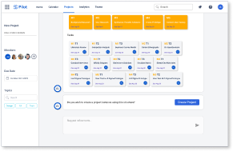
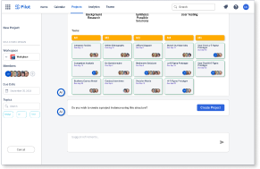
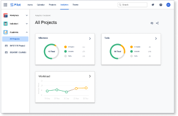

Pilot: Bridging the Gap Between University and Work
A live industry brief from Atlassian: design an AI-assisted tool that helps students translate their academic experience into workplace language, and use it to hit the ground running from day one.

The problem
Students entering the workplace struggle to articulate what their academic work actually demonstrates. An essay on behavioural economics is also evidence of research, synthesis and deadline management, but most graduates never make that translation. Atlassian wanted a product that could close that gap before day one.
Brief: Design a tool that helps students map their academic experience to professional competencies, sitting comfortably inside the Atlassian ecosystem.
Process
Discover
Define
Ideate
Prototype
Test
We interviewed eight final-year students and four hiring managers to understand both sides of the gap. What we found: graduates chronically undervalue their own work, and hiring managers are actively looking for evidence of soft skills that CVs rarely surface.
Competitive analysis covered LinkedIn Skills, Notion CV templates and existing Atlassian products. No tool focused on the translation layer: the act of reframing academic experience as professional evidence.


My role
I led UX across the project, owning the research plan, facilitating synthesis sessions and designing the core interaction model. I was responsible for the end-to-end prototype and for the design rationale presented to Atlassian's product team.
Solution
Pilot is an AI-assisted onboarding tool that prompts students to describe their academic projects in plain language, then surfaces relevant professional competencies from those descriptions. It outputs a personalised skills profile that integrates with Confluence as a living document, updated as the user grows in their role.
Key design decisions: a conversational input model (not a form), real-time competency mapping, and a deliberately low-pressure first-run experience designed to reduce impostor syndrome rather than amplify it.



Impact
8
Students interviewed across disciplines
100%
Task completion in final usability test
★
Presented to Atlassian product & design team
The prototype was presented to Atlassian at the end of the brief. Feedback centred on the conversational first-run as a genuine differentiator, something Atlassian's existing onboarding products don't yet offer.